It goes deep on one technique, deploying and fine-tuning tiny models for edge hardware, rather than a full multi-system architecture.
This traces the talk's arc from the DRAM cost constraint through quantization and device throughput to fine-tuning and a shipped offline app, though the talk does not quantify every hop between these stages (ours).
“the cost of a Raspberry Pi 36 gigabytes has gone up by a factor of like 2.5x”
said at 03:36“It's certainly like on par like with a Gemma 3 much larger model from kind of 12 months ago”
said at 05:44“getting it down to like I know like 2.9 bits per weight if you look at the actual weights we need to hold in memory”
said at 06:48“that is will give about 7.6 tokens per second decode. This is without MTP”
said at 07:19“you can get about like almost 4,000 tokens per second uh preill uh 31 tokens per second decode”
said at 07:50“This model knows about 10 different output functions and can call them at over 86% uh reliability from a given arbitrary text input”
said at 15:06“we've generally found that in the range of 10,000 to 10 million samples of synthetically generated um data will be sufficient to fine-tune a smaller model to a really really high degree of reliability”
said at 16:39“So here that kind of jumps up to 45 tokens per second because we need to read less uh from memory each time”
said at 14:35“there's an ASR engine and a text policing engine. And both of these are fine-tuned versions of tiny Gemma models”
said at 18:13(ours) The consistent pattern across the throughput numbers (Raspberry Pi vs. Jetson vs. Qualcomm NPU) is that hardware acceleration, not model size alone, drives most of the usability gap for real-time interaction, which is worth separating from the fine-tuning reliability gains when deciding where to invest engineering effort for a given device target.
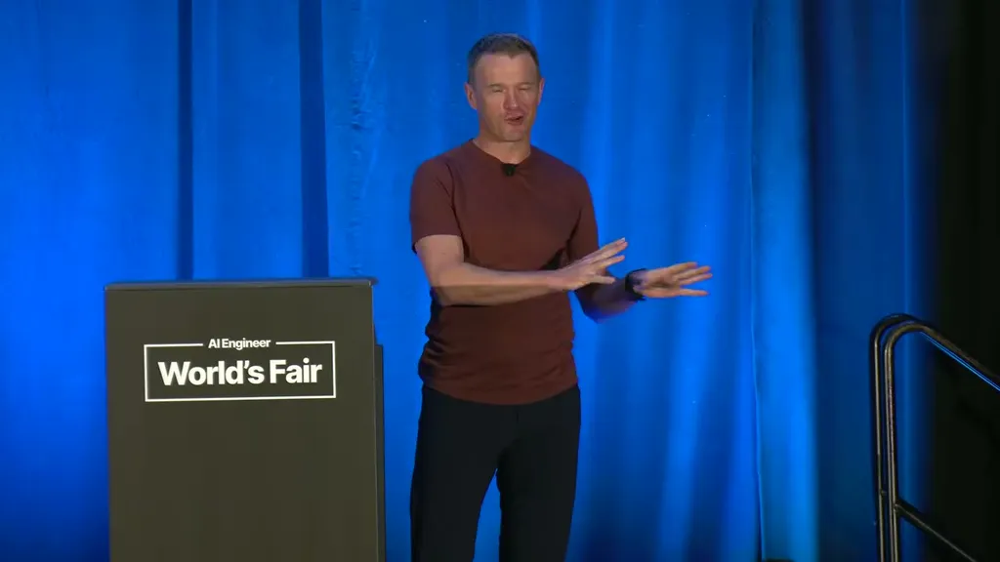
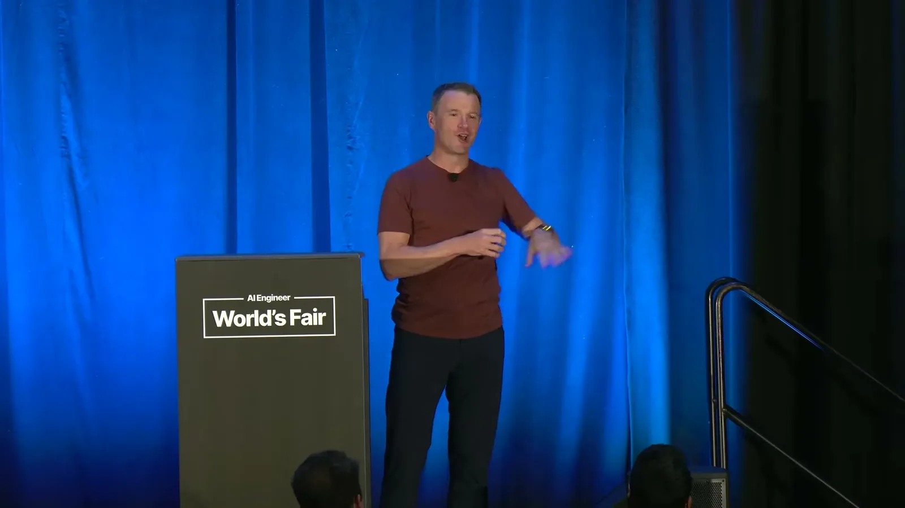
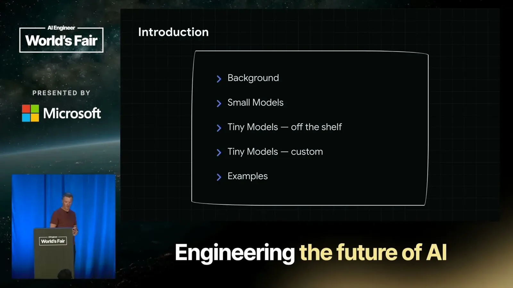
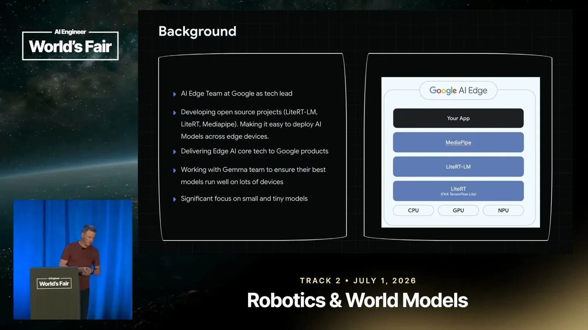
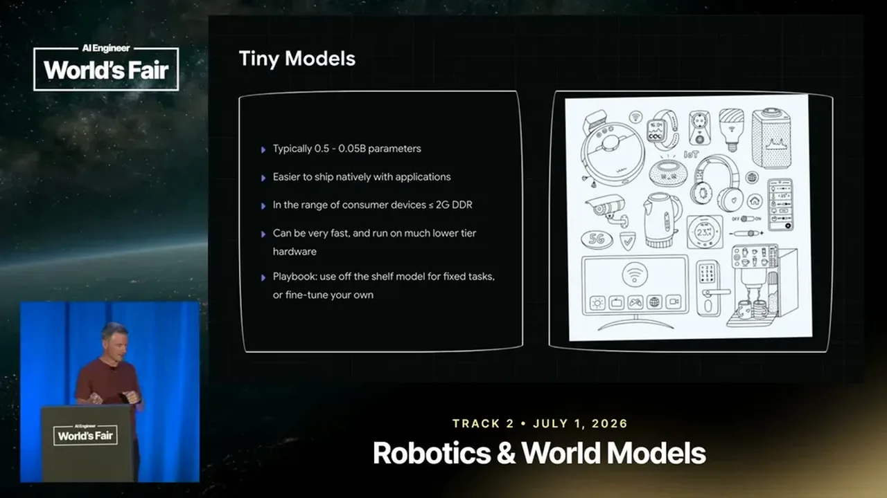
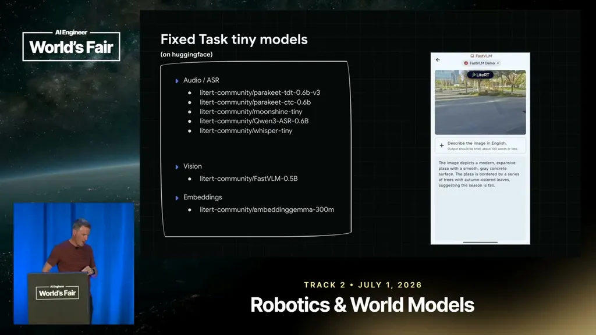
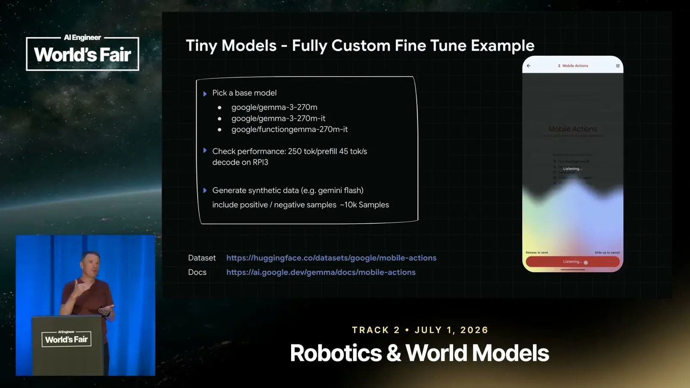
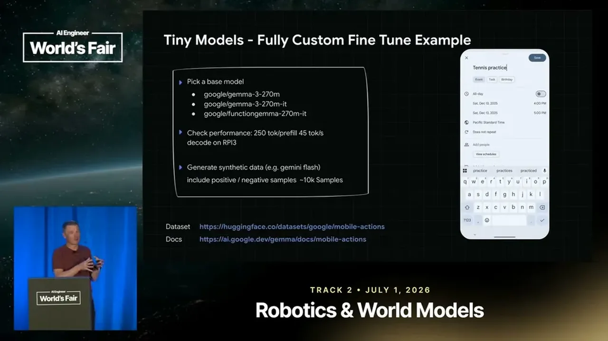
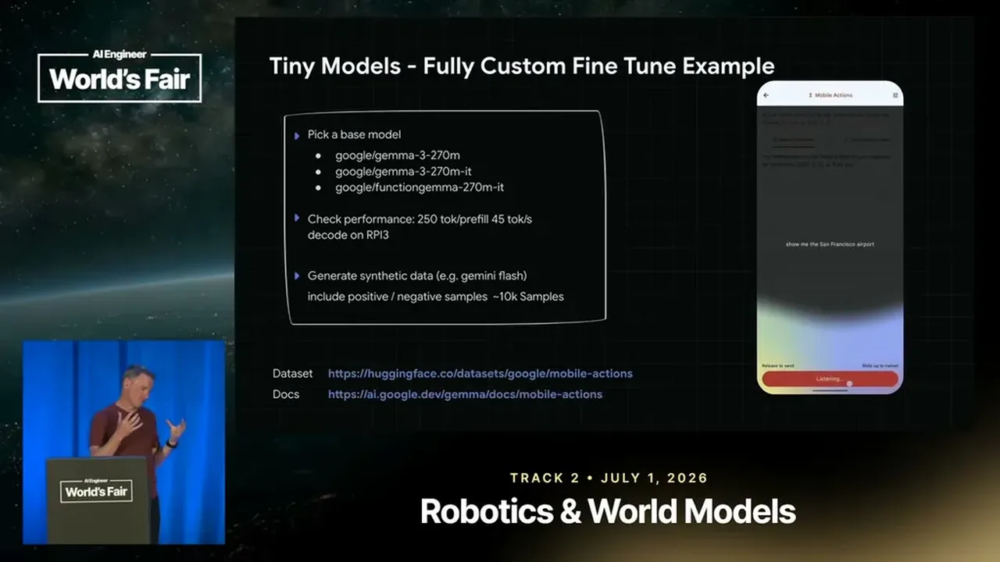
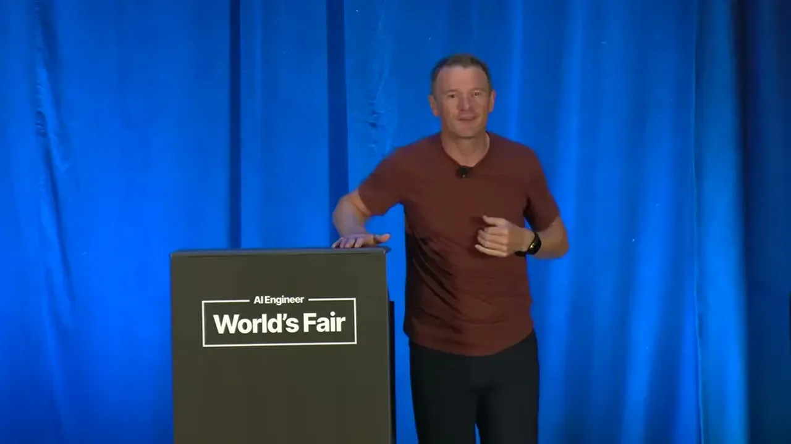
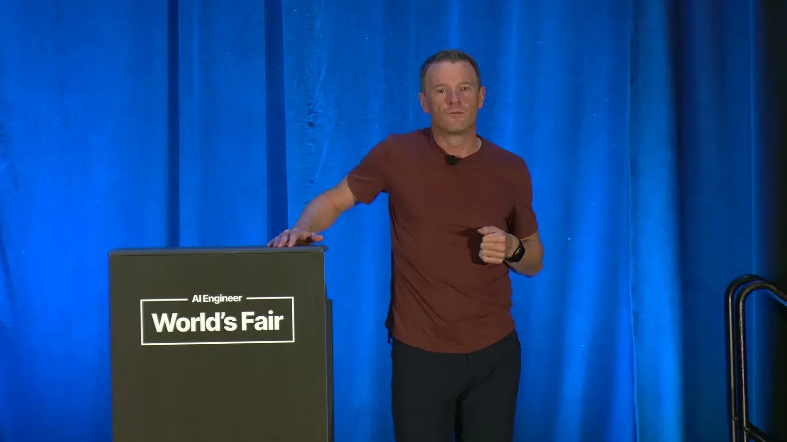
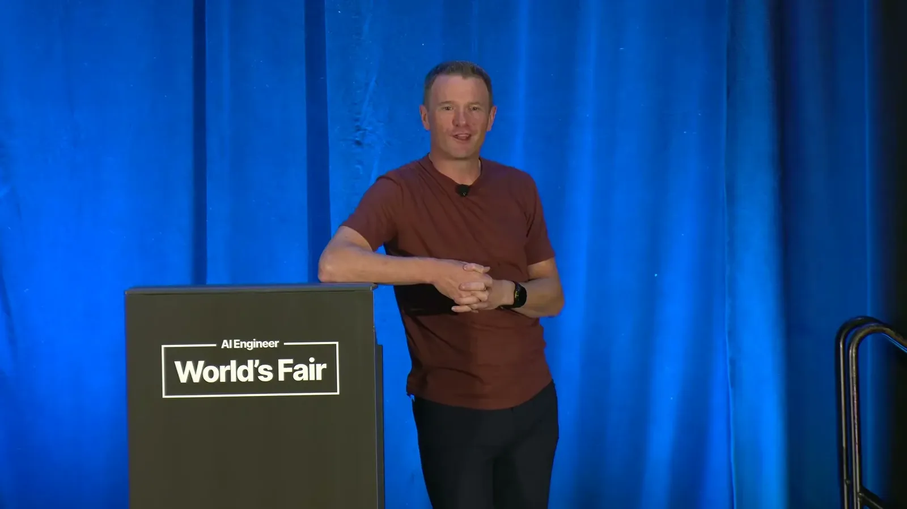
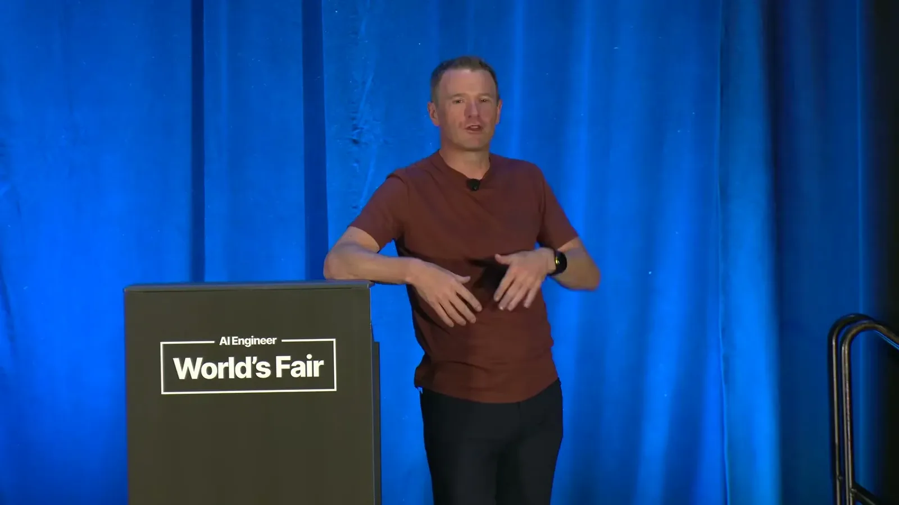
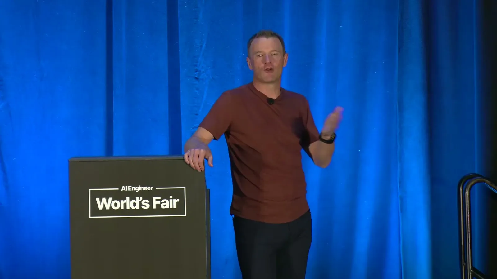
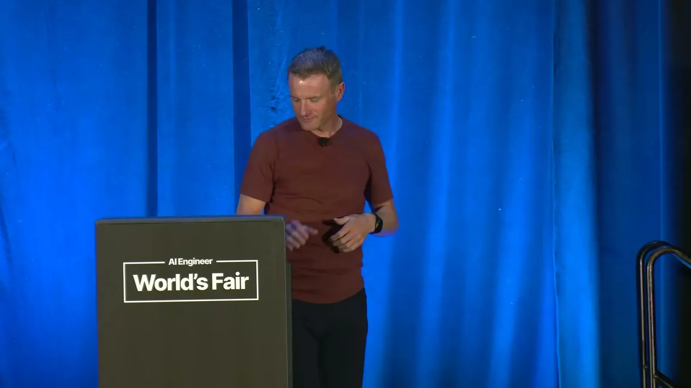
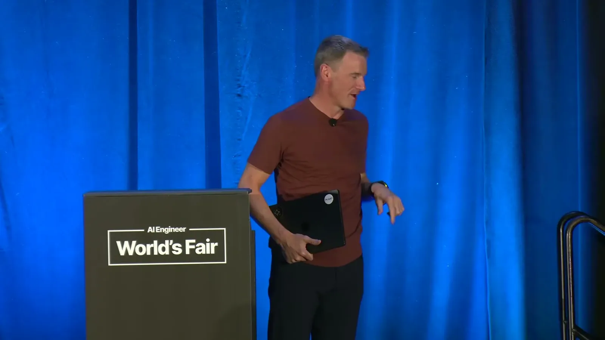
| Stance | Claim | t |
|---|---|---|
| asserts | The cost of a comparable Raspberry Pi with 36 gigabytes of RAM has risen by roughly a factor of 2.5x since launch. | 03:36 |
| asserts | Google's 2B-parameter Gemma model reasons on par with a much larger Gemma 3 model from about a year earlier. | 05:44 |
| asserts | Mixed-precision quantization gets the 2B model's effective footprint down to about 2.9 bits per weight. | 06:48 |
| asserts | The 2B model runs at about 7.6 tokens per second decode on a Raspberry Pi without speculative decoding. | 07:19 |
| asserts | On a Qualcomm IoT board's NPU, the same model reaches close to 4,000 tokens per second prefill and about 31 tokens per second decode. | 07:50 |
| asserts | A fine-tuned mobile-actions model knows 10 different output functions and calls them at over 86% reliability from arbitrary free text input. | 15:06 |
| recommends | In the range of 10,000 to 10 million synthetically generated samples is generally enough to fine-tune a small model to high reliability. | 16:39 |
| asserts | Fine-tuning down to a smaller base model (Gemma 3 270M / Function Gemma) jumps Raspberry Pi decode speed to 45 tokens per second. | 14:35 |
| asserts | A shipped voice dictation app runs entirely offline using two fine-tuned tiny Gemma models, one for ASR and one for text cleanup/personalization. | 18:13 |
Machine-readable copy embedded in this page (script#ontology) and in the corpus ontology.